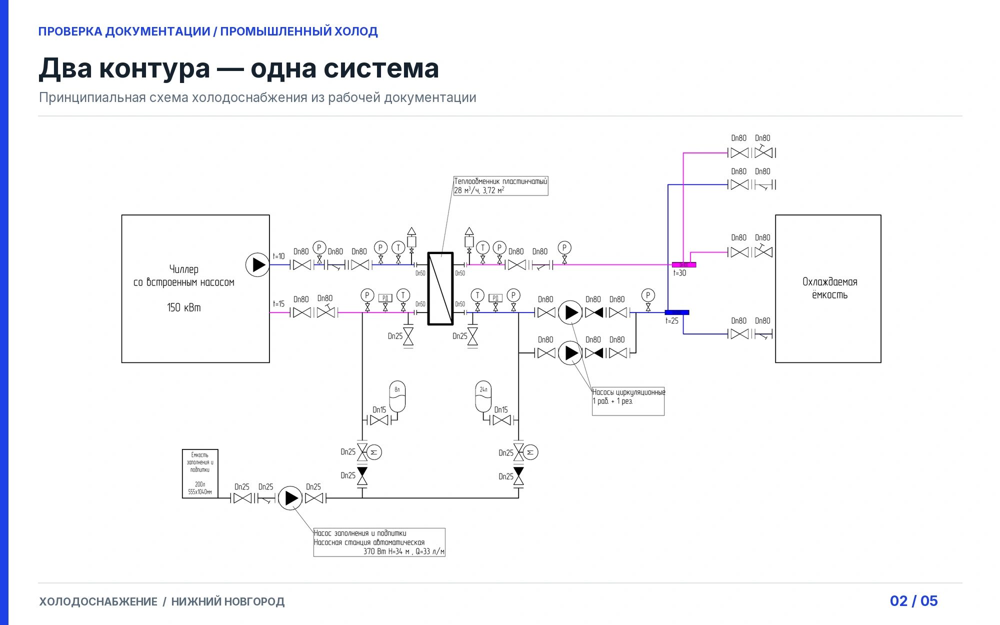
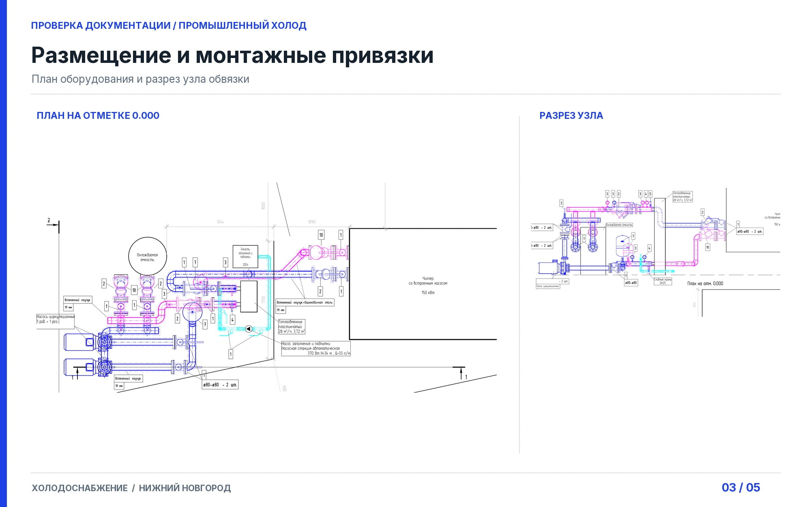
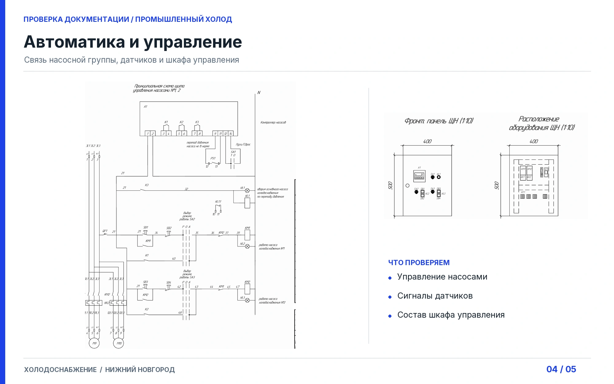
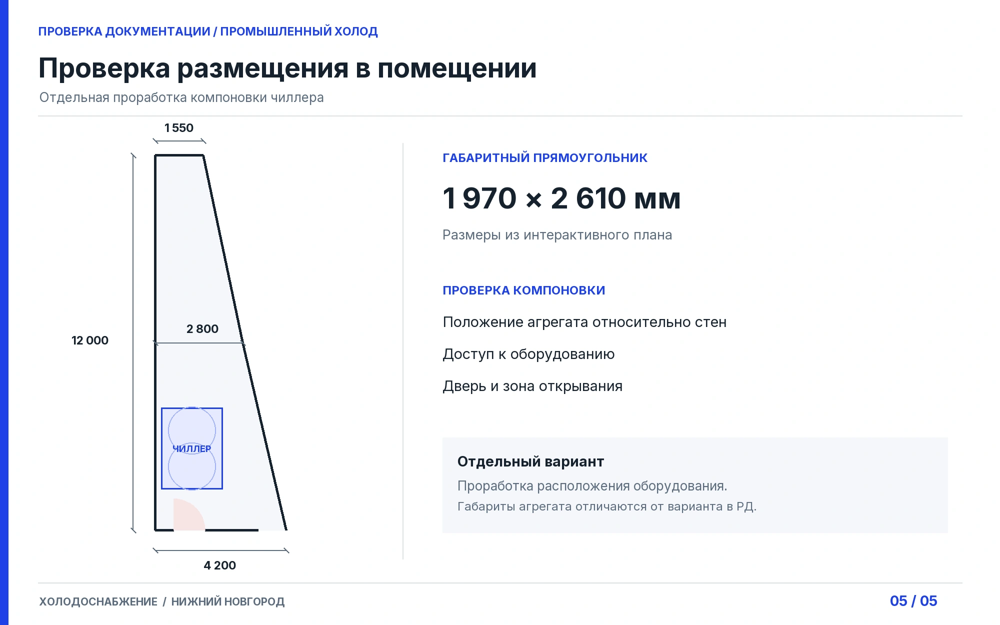
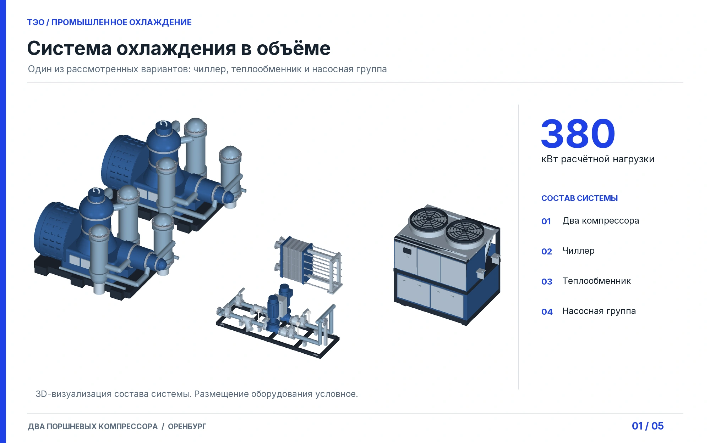
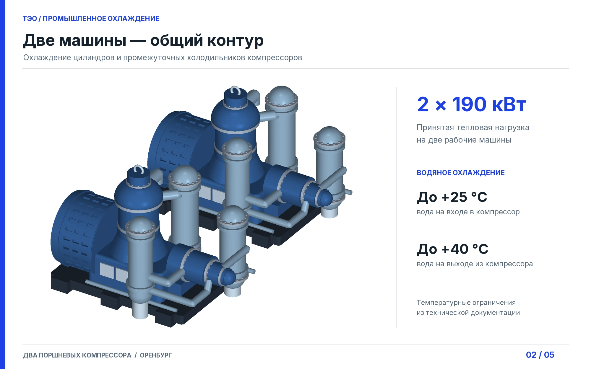
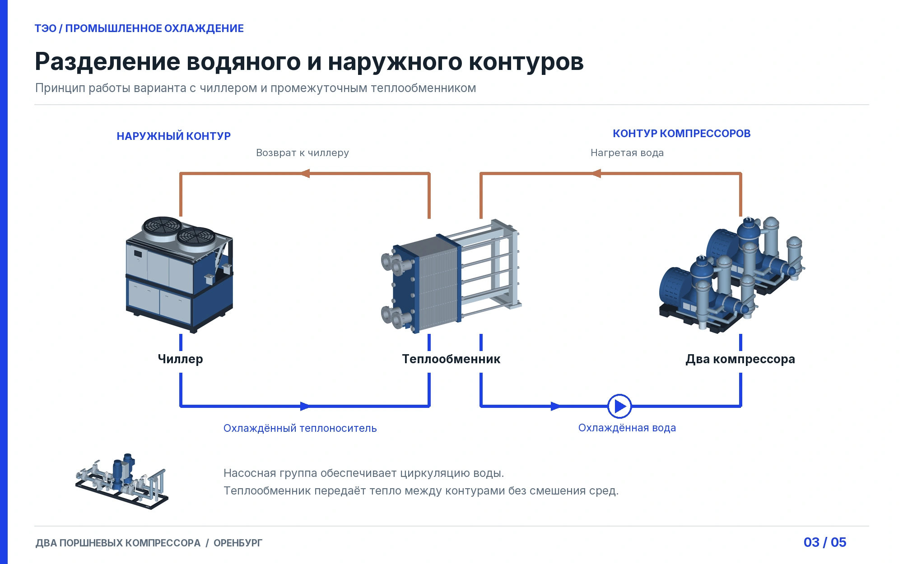
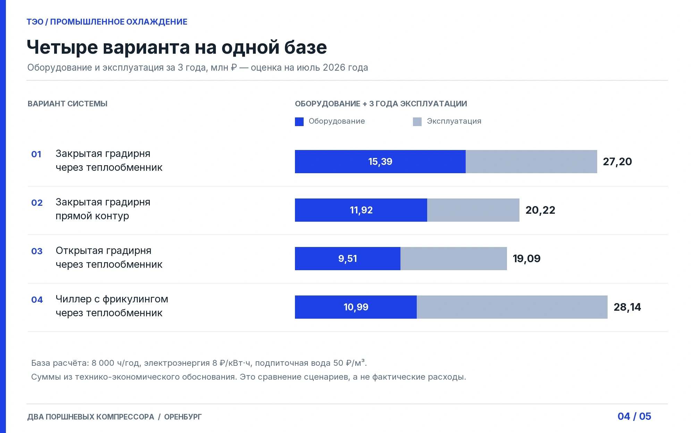

Что мы находили в проектах
Три работы по инженерному консалтингу. Заказчиков не называем: указываем город и тип объекта. Подробности расскажем при разговоре, если заказчик не против.
Обвязка чиллера на промышленном объекте
Проверили рабочую документацию перед закупкой оборудования: от принципиальной схемы и гидравлики до спецификации и компоновки. Ниже — реальные фрагменты проекта и отдельная проработка размещения агрегата.









Замечания составлены 14.09.2026; иллюстрации подготовлены по комплектам ХС и АХС от 21.09.2026. Чертежи более поздней редакции не означают, что все замечания на них сохраняются или уже устранены. На изображениях показаны фрагменты без реквизитов и подписей.
Сверили решения между собой
Сопоставили схемы, пояснения и спецификацию. Проверили расходы, диаметры труб, напоры насосов, состав защитной арматуры и измерительных приборов.
Выделили вопросы до закупки
- соответствие спецификации объекту;
- гидравлическая увязка двух контуров;
- комплектность защиты, подпитки и КИП;
- согласованность схем и ведомостей.
замечание в реестре
С привязкой к документации, обоснованиями и перечнем необходимых уточнений. Реестр стал основой для дальнейшей проработки проекта.
Проверка документацииОхлаждение двух поршневых компрессоров
Подготовили технико-экономическое обоснование системы охлаждения с расчётной нагрузкой 380 кВт. Сравнили четыре варианта по затратам, энергопотреблению, площади и расходу воды. Отдельно оценили работу чиллера с фрикулингом в климате Оренбурга.









Сравнение по обоснованию от 31.07.2026: 8 000 ч/год, электроэнергия 8 ₽/кВт·ч, подпиточная вода 50 ₽/м³. Цифры относятся к расчётным сценариям и ценам на дату работы. 3D-модели иллюстрируют типы оборудования; размещение условное.
Обосновать выбор системы
Определить, как отводить тепло от двух рабочих компрессоров с учётом круглогодичной эксплуатации, температурных ограничений и ресурсов площадки.
ТЭО системы охлажденияОборудование и эксплуатацию
- Закрытую градирню через теплообменник и с прямым подключением.
- Открытую градирню через теплообменник.
- Чиллер со встроенным фрикулингом через теплообменник.
Учли насосные группы, электроэнергию, подпитку, реагенты и занимаемую площадь.
Выбор по приоритетам объекта
В расчёте открытая градирня через теплообменник даёт наименьшую сумму затрат за три года. Закрытая градирня с прямым подключением близка по этому показателю. Чиллер исключает испарительную подпитку, но требует больше электроэнергии.
Подготовили сравнение и условия выбора для согласования с заказчиком.
Промздание с градирнями, баками и насосными
Задача. Заказчику нужно было согласовать размещение градирен, баков и насосных на площадке до проектирования.
Услуга «3D-модели и компоновки»Сделали принципиальную схему оборотного контура и интерактивную 3D-модель площадки. Модель открывается в браузере, её можно вращать и смотреть узлы.
Что нашли- схема оборотного контура
- варианты с одним и двумя баками
- модель открывается в браузере без программ